For each input \(x\) and ensemble \(F\) of predictor the epistemic uncertainty can be measured using an estimate of
As a score for OOD discrimination, the variance performs better than the differential entropy.
For a normal \(\mu \sim N(0,\sigma)\) we have \(H(\mu)=\frac{1}{2} \log(2\pi \exp \sigma^2)\). So the entropy is strictly increasing function of the variance \(\sigma^2>0\). So using the variance amounts to assuming the predictions at a given \(x\) follows a normal distribution (assumption which is already made for Ensemble and MC dropout for the LPP on test).
Moreover for ever \(\sigma^2>0\), the normal distribution \(N(0,\sigma)\) is has the biggest possible entropy among distributions of variance \(\sigma^2\).
Intuition, \(\{ f(x) \mid f\in F\}\) does not seem to follow a normal distribution, and even more so when it has large variance.
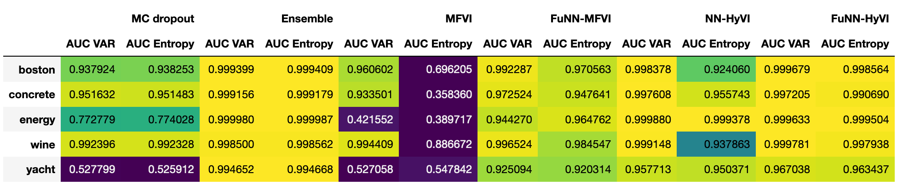
We henceforth use only the variance of the predictions as a score of a uncertainty, or in fact the standard deviation.
OOD samples are genereated using a uniform distribution on the hyperrectangle based on the TRAINING inputs.
Here we plot the distribution of the Euclidean distance to the nearest neighbour in the TRAINING inputs for 10K OOD samples and the test inputs.
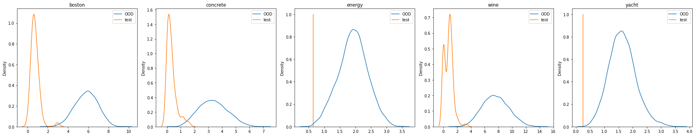
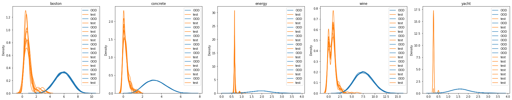
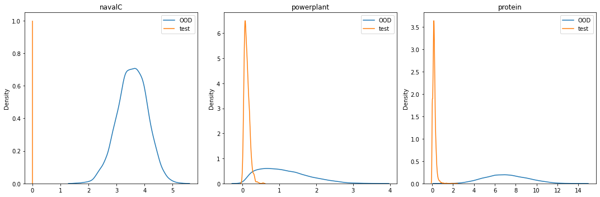
Except for Ensemble which minimizes the square loss, all the other methods use a Gaussian likelihood based on choice of a value of sigmanoise: the aleatoric uncertainty. Here sigmanoise is not learned, it fixed to a specific value that was inspired by Yarin Gal's grid search.
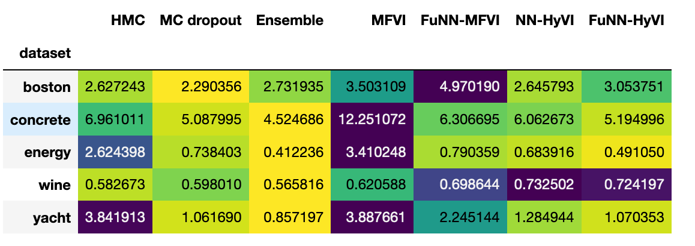
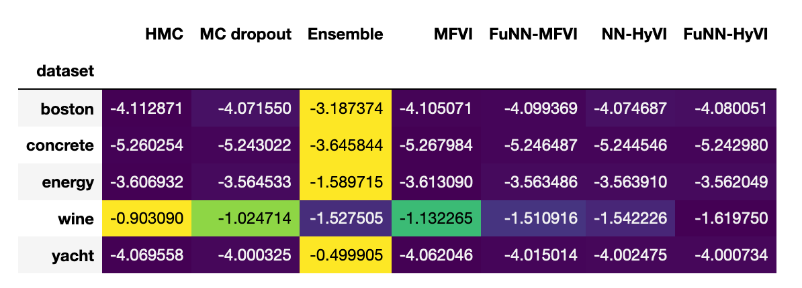
scaled on variance range \([0,3]\).
on \([0,4]\)
on \([0,15]\)
For the ensemble method: 10 models, others 1K models. Parameter space entropy not available for MC dropoout.
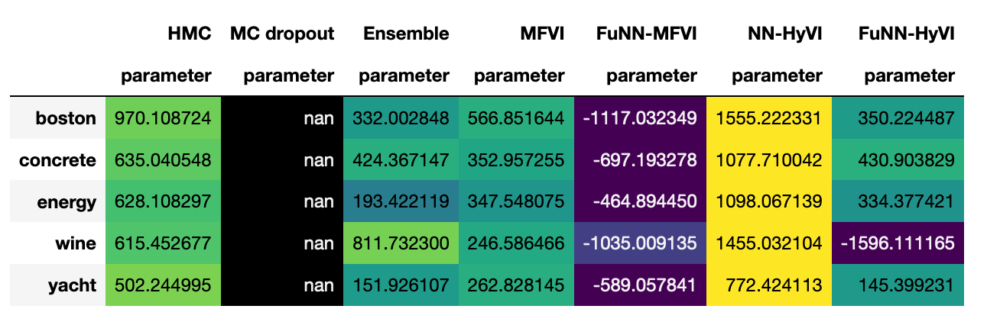
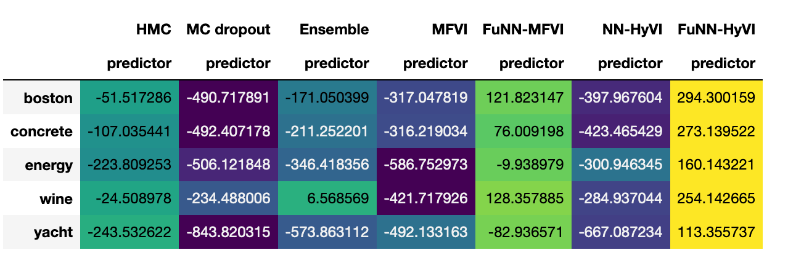
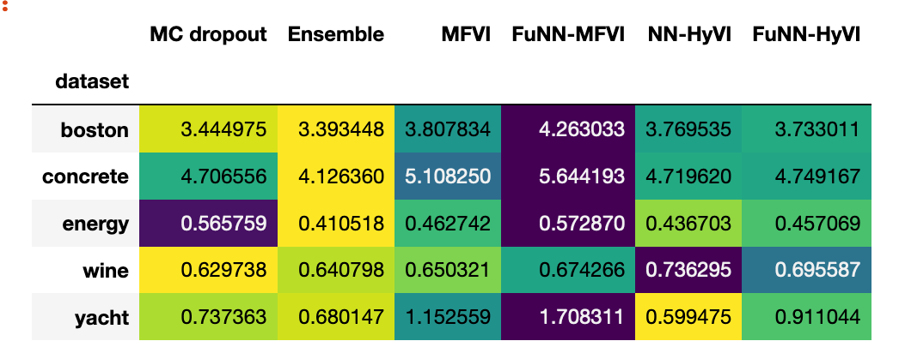
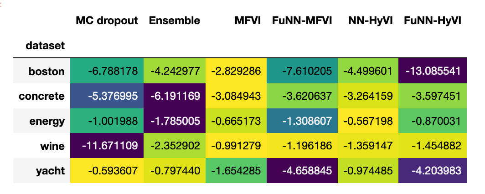
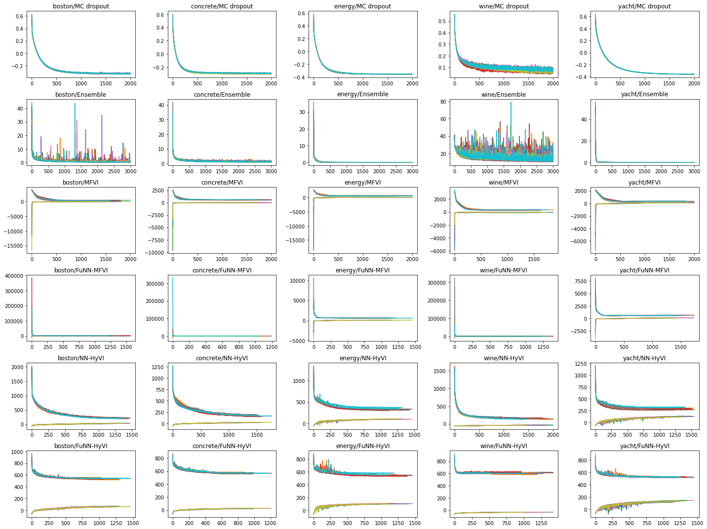
scaled on variance range \([0,3]\).
For the ensemble method: 5 models, others 1K models. Parameter space entropy not available for MC dropoout.
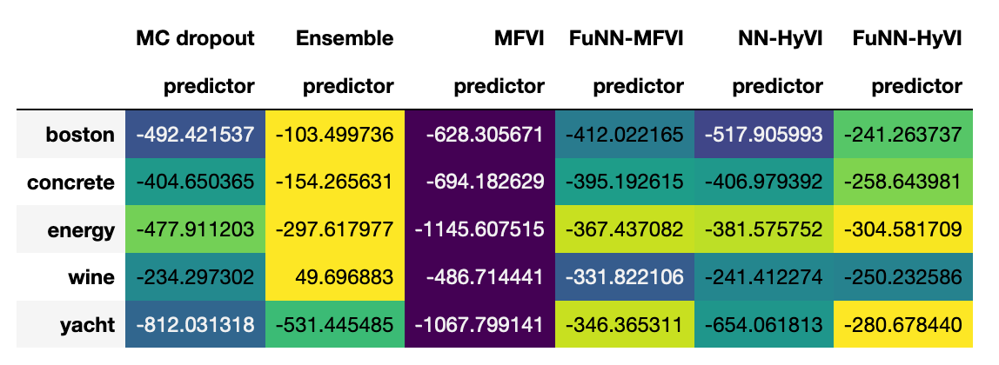
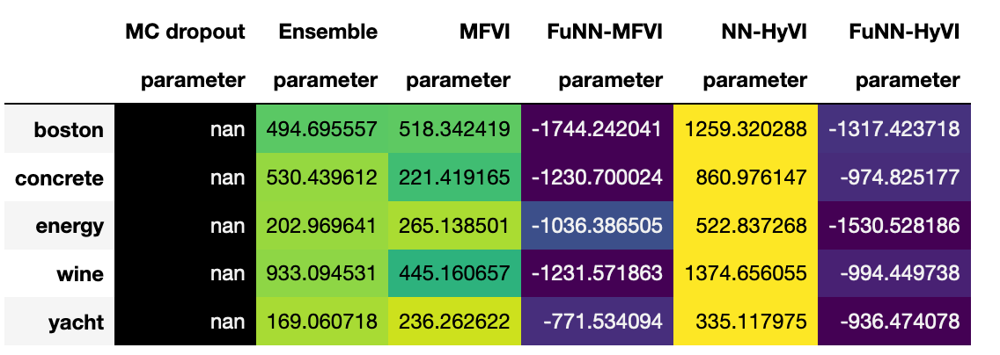
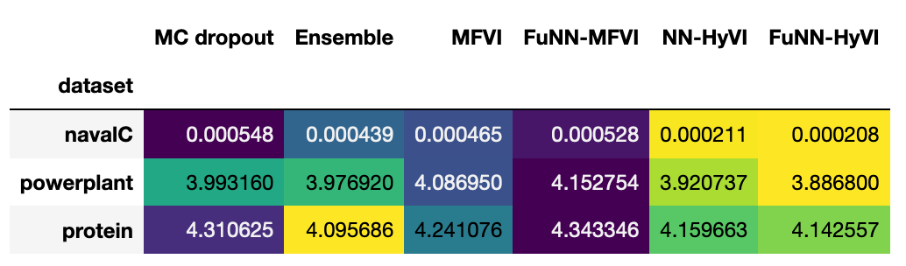
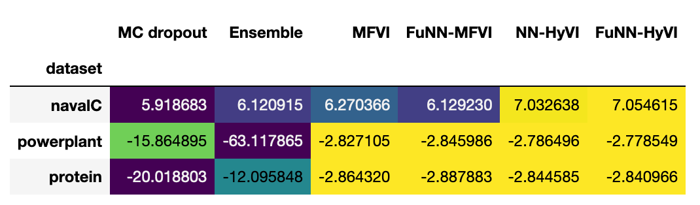
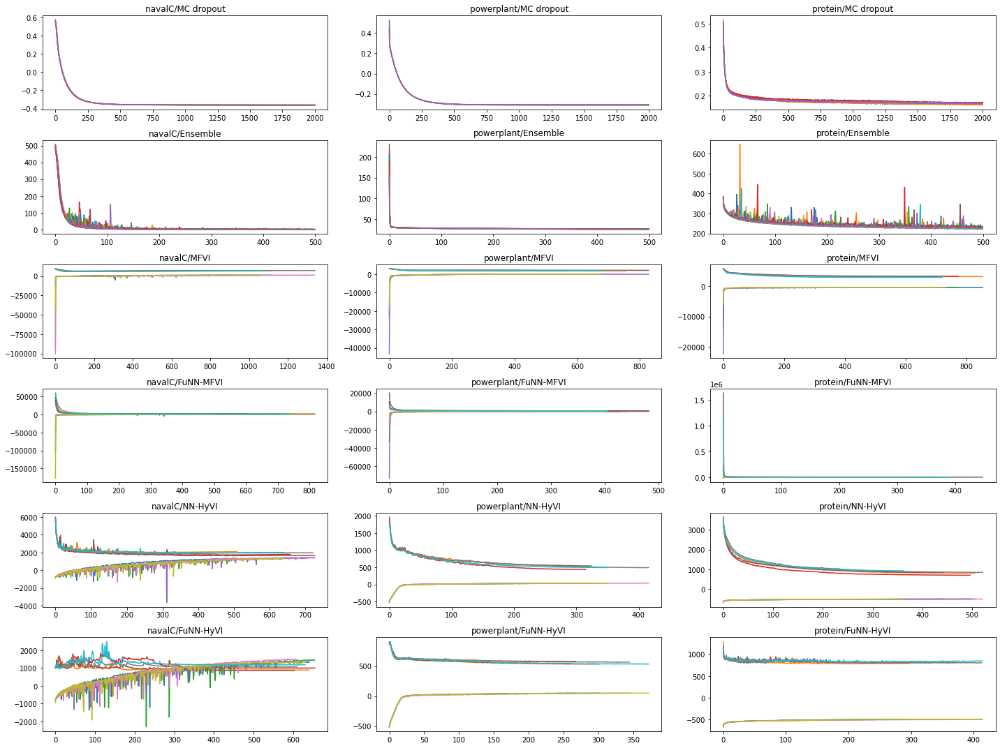
For the ensemble method: 5 models, others 1K models. Parameter space entropy not available for MC dropoout.
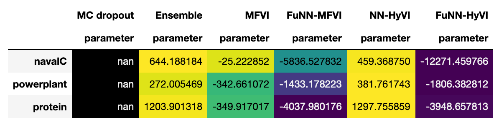
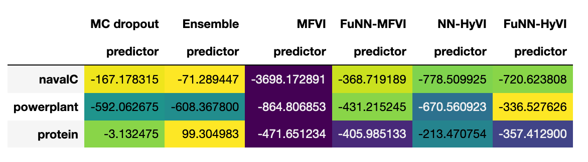